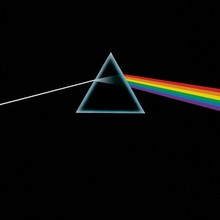

Rock and Roll
Band

Pink Floyd is an English rock band formed in London in 1965. Gaining an early following as one of the first British psychedelic groups, they were distinguished by their extended compositions, sonic experimentation, philosophical lyrics and elaborate live shows. They became a leading band of the progressive rock genre, cited by some as the greatest progressive rock band of all time.
- The Piper at the Gates of Dawn (1967)
- A Saucerful of Secrets (1968)
- More (1969)
- Ummagumma (1969)
- Atom Heart Mother (1970)
- Meddle (1971)
- Obscured by Clouds (1972)
- The Dark Side of the Moon (1973)
- Wish You Were Here (1975)
- Animals (1977)
- The Wall (1979)
- The Final Cut (1983)
- A Momentary Lapse of Reason (1987)
- The Division Bell (1994)
- The Endless River (2014)
Joseph Parrett